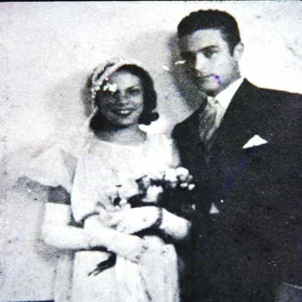
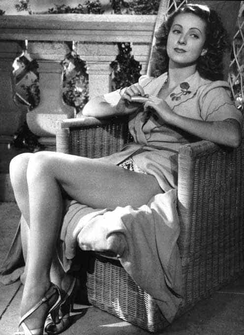
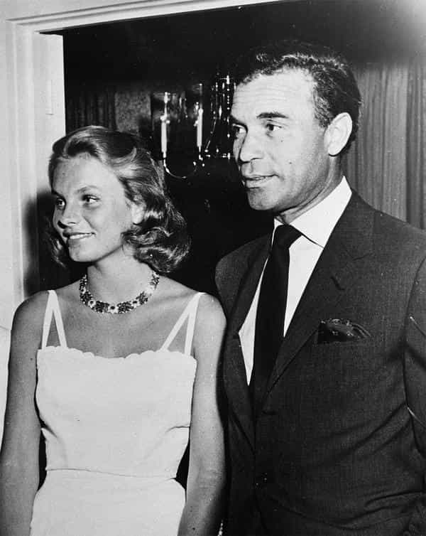

Daryush "Roosh" Valizadeh created ROK in October 2012. You can visit his blog at RooshV.com or follow him on Twitter and Facebook.


The Last Playboy is a biography of Porfirio Rubirosa, son of a Dominican general and arguably the most celebrated playboy to have ever lived.
In his youth he gradually built up enough status from his name, charm, and debonair looks to be hand-picked by dictator Trujillo to have a visible role in the army. This position enabled him to seduce Trujillo’s daughter, which almost got him killed. He successfully parlayed this marriage into scoring more women and money.

Rubi with the dictator’s daughter
Not the most gifted politician, businessman, or soldier, Rubirosa got his money in three ways: leveraging friendships with the right people, getting paid from the wealthy women he seduced, and stealing expensive jewelry (one heist netted him nearly $200,000). When he worked in the Paris consulate, one of his business ventures involved selling visas to Jewish people trying to get out of Europe upon the onset of World War II.
Rubirosa’s connections in the Dominican Republic, a small Caribbean country, only partly explain his massive success in sleeping with seemingly all the famous women of his time. Essentially he banged famous women because he banged famous women. This is a catch-22 we sometimes see in modern times, such as Paris Hilton becoming famous for being famous. Rubirosa landed a couple high-profile women that enabled future monumental conquests that are hard to believe if they weren’t fact. It didn’t hurt that he had a gigantic penis. One of his lovers said that “it could have been a carnival attraction.” His tailors gave special care to the fitting of his pants to compensate for his enlarged member.

His second wife Danielle Darrieux, a famous French actress
To live this kind of life, money is just one piece of the puzzle—you also require a pedigree. The reputation of your family name should precede you to get important invitations to the right social functions. If you don’t have the pedigree, you’ll either need to build a massive fortune or crack a new niche that gives you unquestionable fame, but the problem with fame is that it will be fleeting and you will only experience the high-life for a short amount of time.
It turns out that seducing famous women becomes not just a matter of money or fame, but also continuous access to them. This is what Rubirosa achieved. He would repeatedly run into famous women in his partying routine like it was no big deal, and the important fact is that these women already heard about him (and his dick). On the other hand, I’ve never meet famous women. Rubirosa had access to the top women in the world while I don’t even know how to get access to the top women in a Eastern European city with half a million people.

His last wife Odile Rodin, also a French actress (note the massive age difference)
Halfway through the book, I didn’t have much respect for Rubirosa, as he wasn’t especially skilled in anything besides seducing women, but as I got read on, I became rather seduced by his lifestyle. Maybe I didn’t want to be exactly him, but I wanted to duplicate his success or at least get a taste of it. This man was truly a one-in-a-billion seducer of the likes that the world hasn’t seen again.
Rubirosa followed the footsteps of his playboy friends and died in a car accident. Surprisingly, a lot of people who knew him were almost thankful that he died in this fashion instead of slowly declining with age. There was no decline for Rubirosa—he was a playboy until the very end, leaving the world stage almost as quickly as he arrived on it.
1.
He didn’t care if he was being used. Military life, contrary to expectations, appealed to him. As he would recall, “Physical efforts filled our days: calisthenics, various sports, arms training, target practice, horseback riding. For a young man like me, it was paradise.” It was made for him: the smart, elaborate uniforms, the camaraderie of fellow junior officers, the freedom from the responsibility to feed or house himself or define his days.
2.
“It has always been one of my chief principles,” he later confessed. “I will risk everything to avoid being bored.”
3.
I lived a swirling life, without cease, without the pauses that would have allowed me the chance to think and make me realize that giant steps aren’t the only strides that suit a man.”
4.
“Tonight,” [the maitre d’] crowed, “in my place are gathered the four most famous playboys in the world!” Everybody had a good laugh, but Rubi had the last. “Yes, that’s true,” he responded, “but there is a big difference between me and these other gentlemen: They all pay their women, and all my women pay me!”
5.
“You expect Rubi to be a very dangerous young man who personifies the wolf. Instead, you meet someone who is so unbelievably charming and thoughtful that you are put off-guard before you know it.”
6.
“When I was in Palm Beach, nothing seemed more beautiful to me than the fading light on the Ile St. Louis. When I encountered the gray light of autumn in a Paris that was still recovering from the bar, I wanted nothing more than the sun of California.”
7.
Rubi deeply impressed Sammy [Davis Jr.], who always sought to fashion a gentleman of himself, with his sartorial sense. “I have always cared about clothes, and I will go to any length to look good,” Sammy confessed. “But the way Rubirosa dressed made me feel as if I’d fallen off the garbage truck.”
8.
“Rubi used to like to go, as he would say, ‘todo líquido’—all liquid, all drinking, nothing to eat,” as Taki remembered: a good old-fashioned parranda. And the night of this unexpected victory would be one of those todo líquido nights.”
9.
It is better than it happened this way. A clean break with the life he loved. Neither he nor I could have endured the spectacle of him lingering on, a cripple, unable to dance, play polo or drive his car.
If Rubi could have chosen the way he died, this is the way he would have gone. In his car, in the dawn, going fast as he loved to do. He loved speed. But he loved life even more.
Read More: “The Last Playboy” on Amazon